GPT-6 Astra as a Cost-Efficient Teleoperator for Real-Ready Robot Data
A coding agent does the teleoperator's job. One calibration episode in, real-ready robot data out.

Simulation in, consistent multi-view video out
Left: the simulated rollout. Right: the farm episode rendered from it. Head camera on top, wrist cameras below; the views agree with each other, and every frame keeps the exact action behind it.
Video model alone vs. inside DataFarm
The same simulated episode, the same video model. Called directly, it gets the look but not the episode: extra cups, a misplaced arm, views that disagree. Inside DataFarm, every view stays consistent with the others and with the simulation.
What DataFarm adds to the video model
Structure from the simulator, appearance from the real cameras. Edge maps of the untextured simulator video fix arm pose, object positions, and timing; real reference frames and a picture of the robot supply only the look.
All cameras in one generation. Head and wrist views are tiled on one canvas and generated as one video, so they share lighting and materials and agree on which objects exist and what each gripper holds.
References and prompts that add no content, and long episodes without drift: references match the simulated task state, prompts describe only the current segment, and long episodes are independent chunks joined without changing geometry or timing.
| Renderer | Motion ↑ | Structure ↑ | Jumps ↓ |
|---|---|---|---|
| Direct call, one canvas | 0.07 | 0.16 | 11.2 |
| Direct call, each camera | 0.04 | 0.10 | 8.8 |
| Edge control only | 0.50 | 0.54 | 30.2 |
| DataFarm, each camera† | 0.55 | 0.64 | 40.6 |
| DataFarm | 0.74 | 0.85 | 2.9 |
Correlation of each view with the simulator video, in frame-difference energy (motion) and image gradients (structure); jumps per 1,000 frames. Means over stack cups, weigh apple, and pull drawer. †Stack cups only; DataFarm on that episode: 0.75, 0.87, 4.2.
Robot data is still collected one episode at a time
- Each episode needs a robot, an operator, and a reset.
- Every new task, layout, or scene starts the collection over.
- The cost grows with every episode you record.
A coding agent takes the teleoperator's place
It does not drive the robot: it compiles the task into a simulation and a render contract, and the farm produces every further episode.
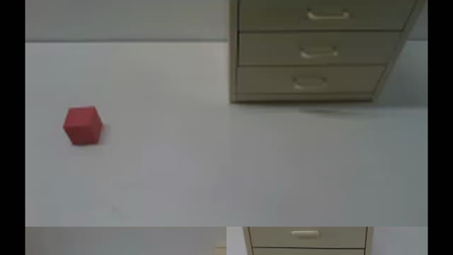
One calibration episode: a short recording of the robot in the target scene, plus a request such as "100 episodes of this task". None of its actions are reused.
The agent fits cameras and scene, qualifies the simulator, and writes an expert against a judge it cannot see; the simulator fixes actions, states, and contacts.
A video model conditioned on real frames renders every rollout as photographic video, all cameras in one generation.
Machine checks and an independent reviewer compare every render with its simulated state; only episodes that agree enter the dataset.
From simulation to photograph
Same rollout, real look
Drag across the video. Left of the handle: the simulator rollout; right: the farm episode rendered from it, frame by frame.
Texture the simulator cannot draw
The simulator models the geometry and contacts the physics needs; the look of a lit display or a woven towel comes from the calibration episode, set once per task by a render contract costing $4.1–6.2.
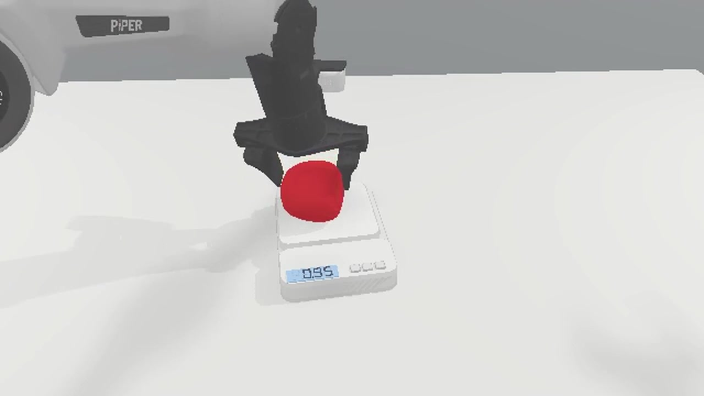
Simulator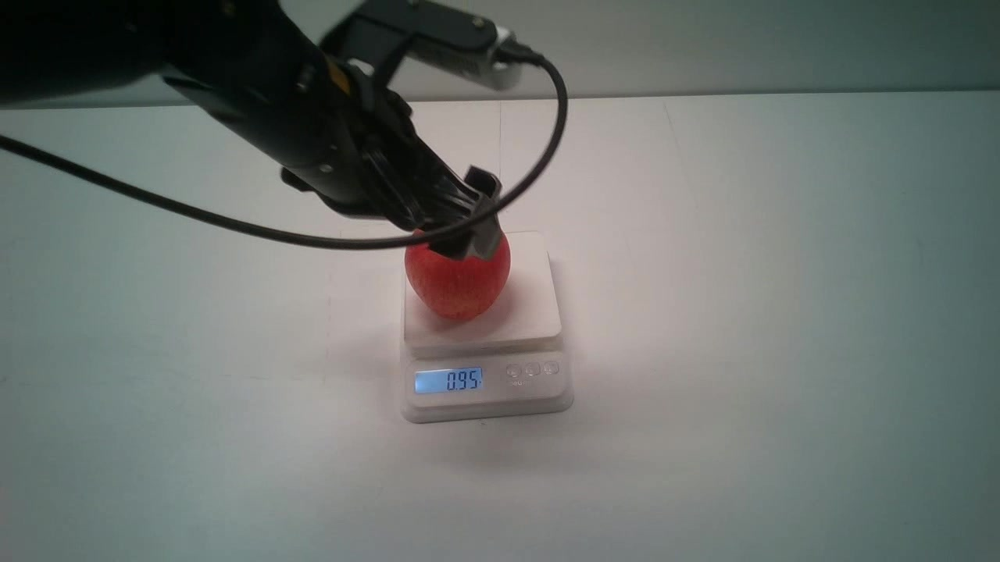
Real camera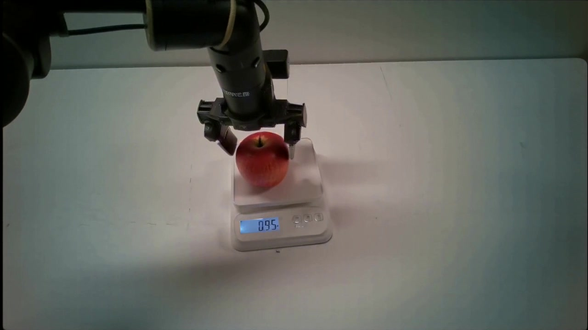
DataFarm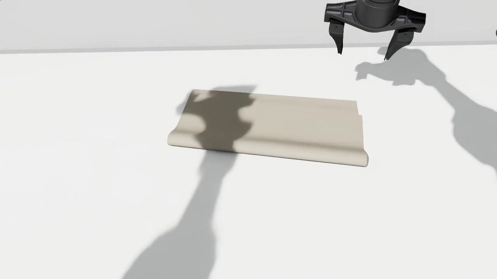
Simulator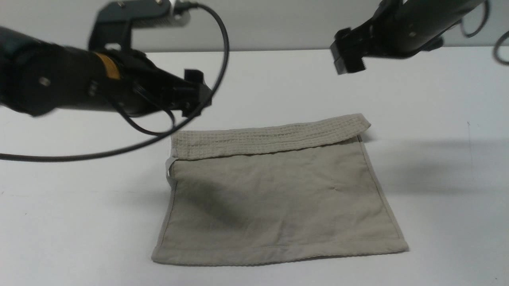
Real camera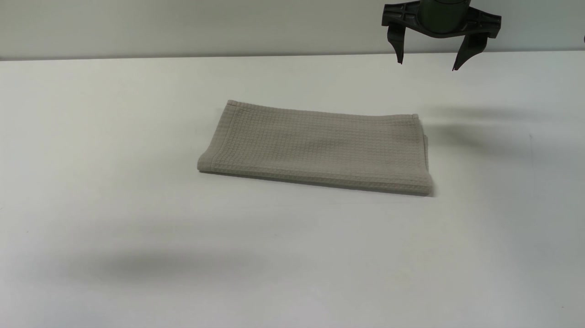
DataFarmReal frames come from a recording at the same task phase, not the same frame.
One calibration episode, one hundred farm episodes
Nine stack-cups farm episodes, each a different simulated rollout with its own layout. Once the task is compiled, every further episode needs no robot and no operator.
New appearance, same motion
A new tabletop or light only changes the render request; the simulated motion stays the same. Teleoperation would have to restage the scene for each one.
Inset: the simulator video of the same rollout.
Nothing enters the dataset on the agent's word
A generated video can look right and still contradict its labels. Machine checks and an independent reviewer compare every render with its simulated state, and reject failures like these.
Phantom arm
An arm the simulator does not contain.
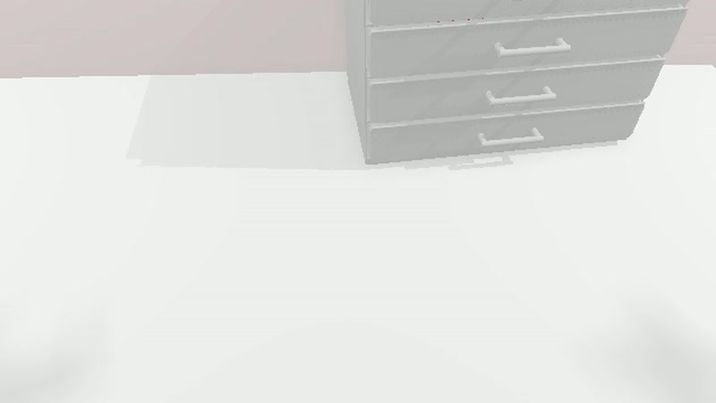
simulator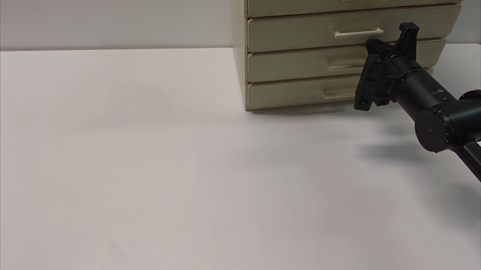
render: rejectedFuture state drawn early
The cube is in the drawer before the simulator puts it there.
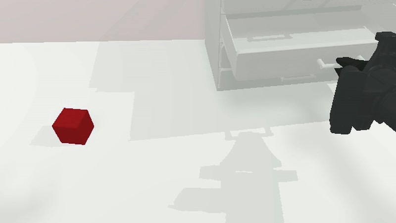
simulator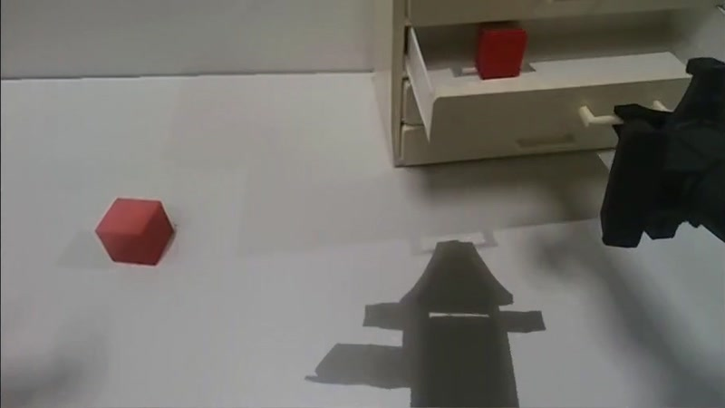
render: rejectedInvented cloth
A wrist view adds towel where the simulation is empty.
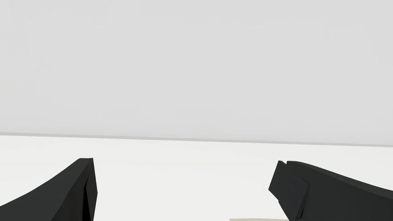
simulator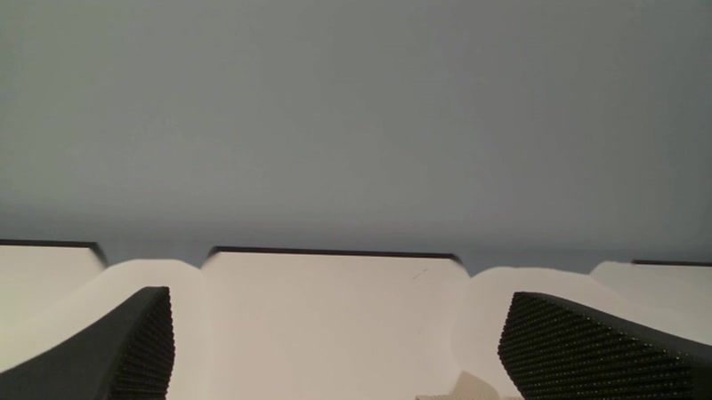
render: rejected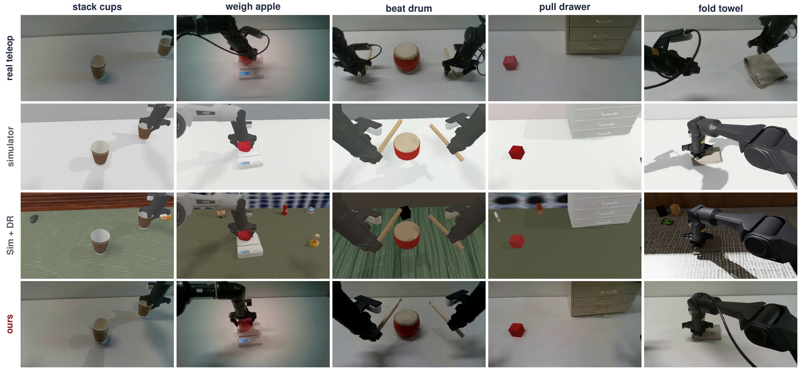
Closer to the real cameras. Kernel distance of head-view frames to real camera frames (KID ×103): 0.83–0.88 for farm episodes, against 1.93 for the simulator and 2.50 with domain randomization (Sim + DR). The farm is closer than the simulator on every task.
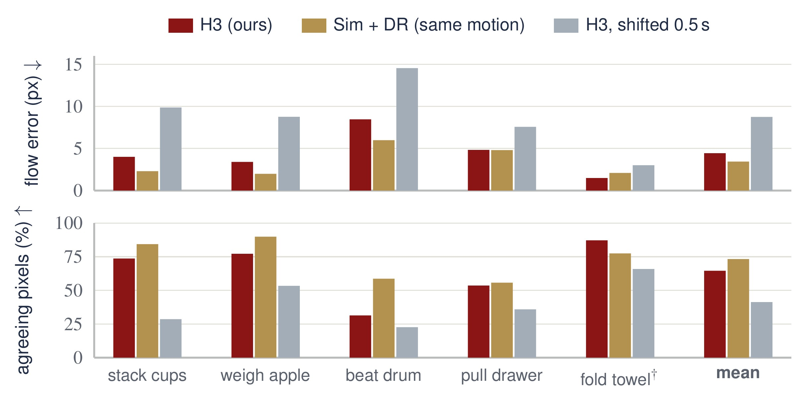
The simulated motion is kept. Farm renders deviate from the simulator's optical flow by 4.4 pixels and agree on 65% of moving pixels, close to Sim + DR (3.4, 73%), which has exactly the simulated motion; paired with the simulator video half a second later they reach 8.8 pixels and 41%.
Does farm data work on a real robot?
Real-ready: trained only on farm data, run directly on the robot
π0.5 policies trained on 100 episodes from each source, 20 trials per task and condition, on a dual-arm PiPER robot. Neither training set contains the test tablecloth or the light.
On par in the original scene, far ahead under unseen appearance. Farm-trained policies match or exceed teleoperated data on four of five tasks in the original scene. Under the unseen tablecloth and light, they lead on every task, by 11, 6, 12, 7, and 5 of 20 trials.
Rendering with real images is what transfers. Sim + DR shares the grounding, the expert, and the actions with DataFarm and differs only in how the frames are produced. The farm varies surfaces and lighting around fixed, exact trajectories, so the policy cannot rely on how the table looks.
Pay once per task, not once per episode
Teleoperation pays an operator for every episode and restages for every new tablecloth or light. The farm pays once to adapt a task, then only for rendering and review; a new appearance is a text change.
| Task | One-time | Farm / ep. | Break-even N=100 | Teleop original | Teleop new look |
|---|---|---|---|---|---|
| Stack cups | 44.26 | 1.56 | 2.02 | 1.87 | 2.43 |
| Weigh apple | 41.29 | 1.44 | 1.87 | 1.37 | 1.93 |
| Beat drum | 38.43 | 0.32 | 0.71 | 0.58 | 1.14 |
| Pull drawer | 43.61 | 0.75 | 1.20 | 1.74 | 2.30 |
| Fold towel | 57.02 | 2.29 | 2.89 | 2.07 | 2.63 |
| Mean | 44.92 | 1.27 | 1.74 | 1.53 | 2.09 |
USD. Break-even: teleoperation cost per episode above which the farm is cheaper for 100 episodes. In the original scene the farm is cheaper for 100 episodes on pull drawer, and for 1,000 episodes also on stack cups and beat drum. With new appearance (an assumed restaging of 3 min every five episodes), it is cheaper for 100 episodes on every task but fold towel, and for 1,000 on all five.
Certification is kept apart from production
Because agents write both the expert and its checks, and the video model may alter the scene, every stage is checked by a component other than its producer.
- Grounding and simulator qualification. The agent aligns the cameras, fits scale and physical parameters, and labels each quantity as measured, fitted, assumed, or unknown; skill probes check that the simulator can reproduce the actions the task needs.
- Task contract and expert. The expert is developed against a judge it cannot inspect and admitted only on held-out initial states; every admitted trajectory is one continuous execution.
- Rendering with real images. The renderer may alter appearance but not geometry, objects, or timing; all cameras are generated together from the simulator's structure.
- Verification and admission. Every rendered episode is compared with its simulated state by machine checks and an independent reviewer; all attempts and failures are kept.
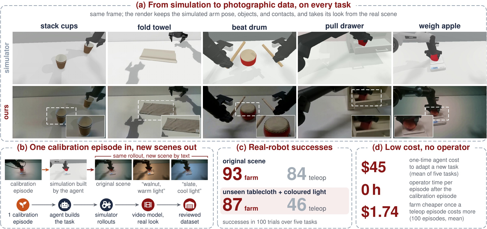
What the farm delivers. (a) The same frame of a simulator rollout and of the farm episode for each task. (b) From a request and one calibration episode, the agent builds the task in simulation, and the video model renders each rollout in the original scene or a scene described by text. (c) Real-robot successes. (d) Mean costs over the five tasks.
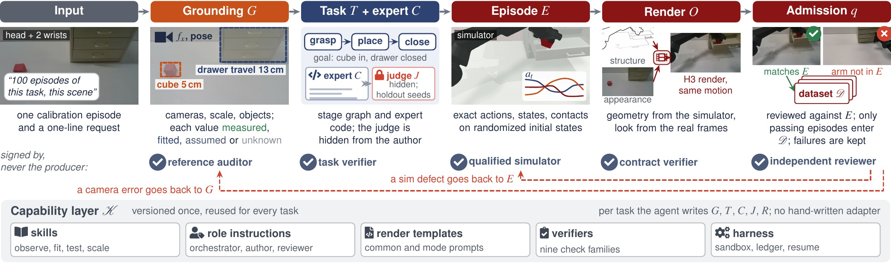
The pipeline, followed on one drawer episode. The reusable skills, role instructions, render templates, verifiers, and harness are versioned apart from the task artifacts the agent writes.
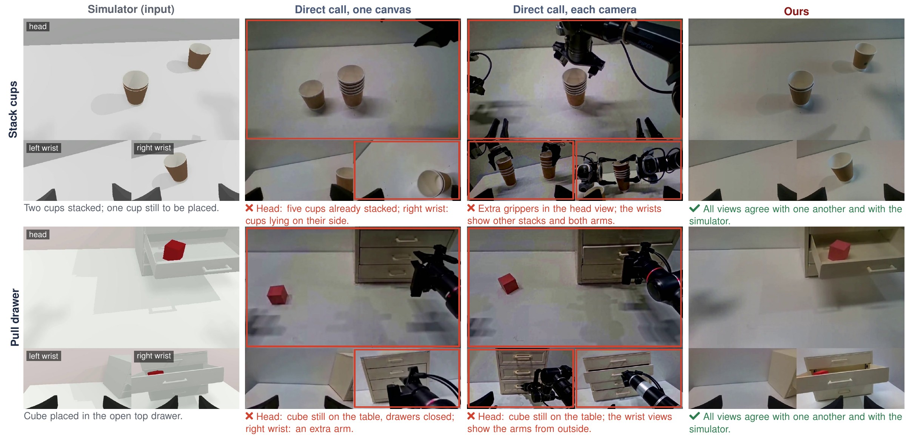
Following the simulation in every view. Red boxes mark views that contradict the simulator or the other views of the same frame.
Abstract
Teleoperation remains the default way to collect robot demonstrations, but every episode costs robot and operator time, and every new task starts from scratch. We ask whether a coding agent can take over the teleoperator's job. In our data farm, DataFarm, the agent receives a data request and one calibration episode of the robot in the target scene and rebuilds the task in simulation: it writes the scene, an expert controller, and a success judge. The simulator supplies exact actions, and a video model conditioned on real images renders each rollout as photographic video, generating all camera views together so that they stay consistent. The output is real-ready data: synchronized views from the robot's cameras, labelled with the robot's own actions, on which a policy is trained directly and deployed on the real robot. Because agents write both the expert and its checks, and the video model may alter the scene, the farm separates certification from production: a judge hidden from the expert scores it on held-out initial states, and independent reviewers compare every rendered episode with its simulated state before admission. On five real-robot tasks, policies trained only on farm data match policies trained on as many teleoperated episodes (93 vs. 84 successes in 100 trials), and under an unseen tablecloth and coloured light they keep 87 successes where the teleoperation-trained policies fall to 46. Adapting a task is fully automatic and costs $45 of API usage on average; for 100 episodes, the farm is cheaper than teleoperation once a teleoperated episode costs more than $0.71–2.89.
BibTeX
@article{zhang2026datafarm,
title={PyRUA-DataFarm: GPT-6 Astra as a Cost-Efficient Teleoperator for Real-Ready Robot Data},
author={Zhang, Kewei and Ma, Juncheng and Wang, Duomin and Lv, Guodong and Liu, Yichen and Chen, Hao and Zhang, Chuanrui and Chen, Yuxuan and Ruan, Feixiang and Deng, Yufan and Xie, Enze and Zhou, Daquan},
journal={arXiv preprint},
year={2026}
}One calibration episode in. Real-ready robot data out.